Background
DevBootCamp has individual portfolio challenges in Phase 2, and one of the portfolio challenges is based upon creating a login page, a signup page, a view for users who have logged in, and a logout button. The premise of authorization and authentication is in setting up sessions(cookies) as helper methods and calling them within your controllers. Let's take a look at the views and corresponding routes in the controller.
Model and Migrations
Migration file
The above is our migration file for the users table. We set password_hash on line 6 instead of password because we are using an encryption gem 'BCrypt'. hash is an encryption terminology in this sense, not the actual data structure in ruby.
Model file
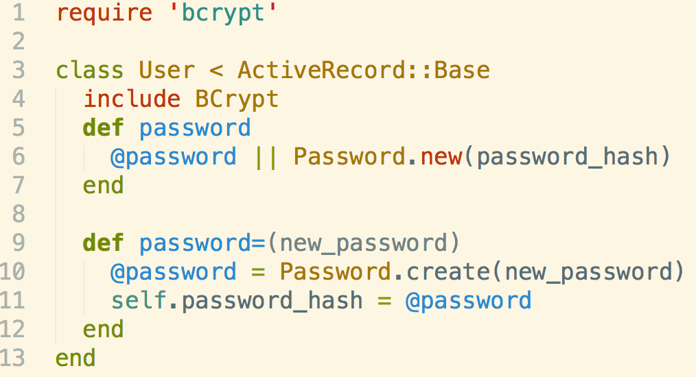The above is our User model.
We have 2 methods in our model, a getter method password and a setter method password= which takes a parameter.
The latter will take a parameter and create a new Password object(from BCrypt, which is basically encrypting our password with various numbers and letters), and sets our encrypted password string(Password object) to User attribute password_hash This is for signing up a new user.
The former will decrypt our Password object and compare our html form text input to a particular User(using User.find_by "different attribute")
Let's walk through the views and corresponding code.
Sign up
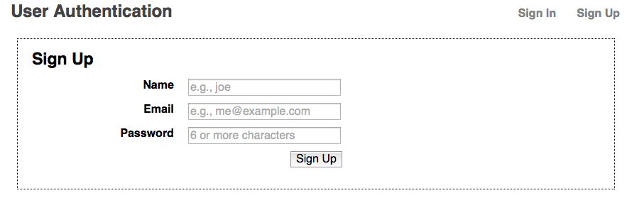This is the view that users see when they click on Sign Up in the top right corner. If users click on Sign in and are signed in, the two links on the top(Sign In and Sign Up) change to Sign Out. The code lies within the layout.erb view below:
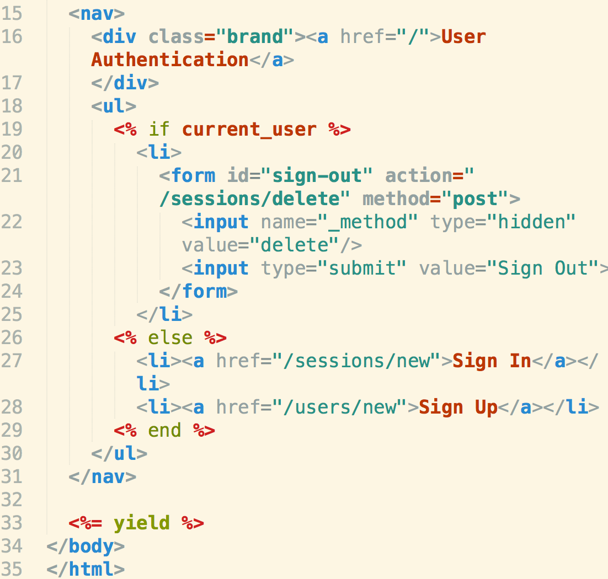The code for the sign-up form is located in a separate view below:
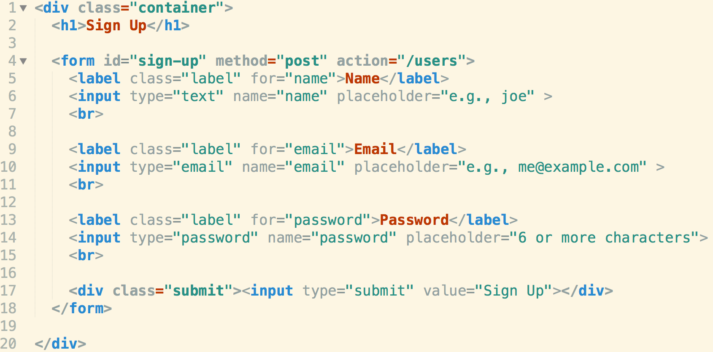Notice what each name in the form is set to(lines 6, 10, and 14) as well as the URL request(line 4).
Here is the corresponding code in the controller.rb
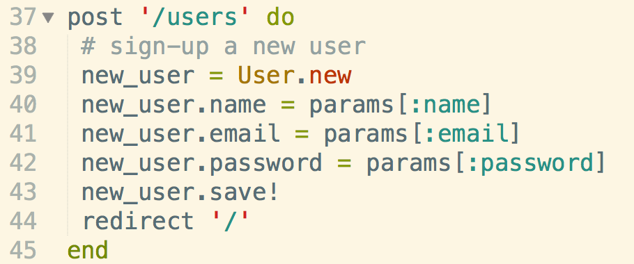Sign In
This is where things get tricky. If a user signs in, they need to be assigned a session(cookie) which are created as helper methods. Let's take a look at our helper file:
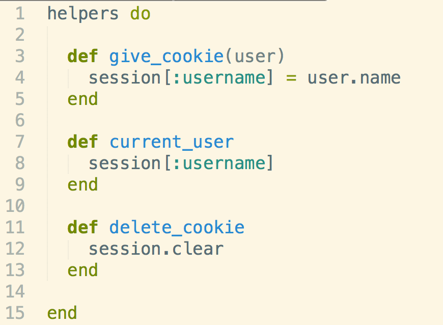Here is the view that the users will see:
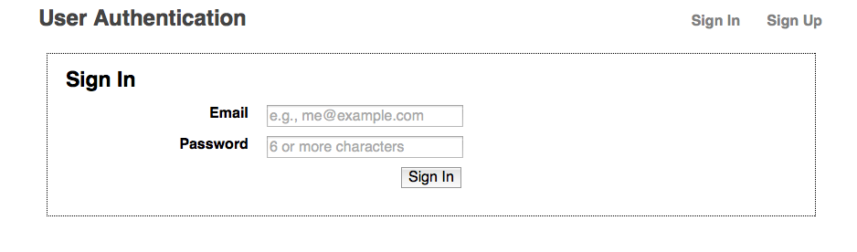Here is the corresponding code in the sign_in.erb view
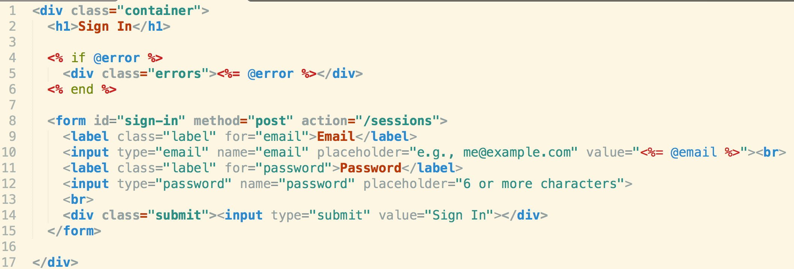And the corresponding code in the controller.rbSession/cookie is given only if email and password exist in the same User object.

Signed In Or Not?
Below is the view for someone not signed in.
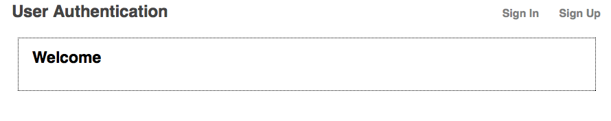And for someone signed in.
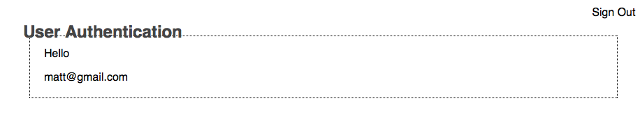The code for the controller is listed below:
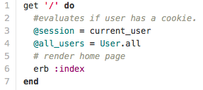The code for the index.erb view depending on whether or not a user is signed in is below: (uses conditionals)
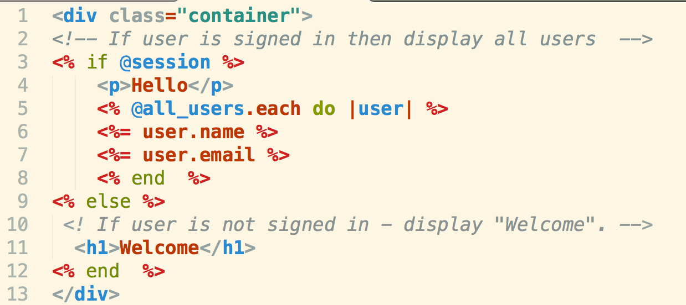Sign Out
To sign out, just delete the session/cookie.(As a helper method, the sign-out view button is located in the layout.erb file.
Here is the delete code in the index.rb controller
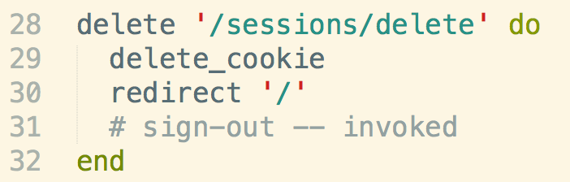Here is the delete code in the layout.erb view
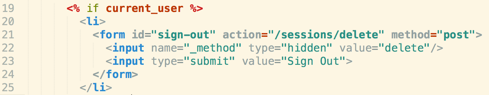